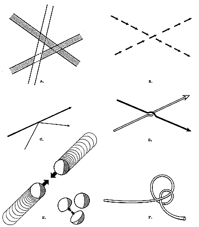

Fig. 517.10 Interference Phenomena: Lines Cannot Go Through the same Point at the Same Time: Interference phenomena: No two actions can go through the same point at the same time. The consequences of this can be pictured as follows:
Tangential avoidance (like knitting needles).
Modulated noninterference.
Reflection.
Refraction.
Smash-up.
The minimum knot or critical proximity.
Copyright © 1997 Estate of R. Buckminster Fuller